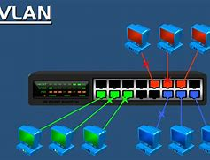

VLAN
Una VLAN (Red de Área Local Virtual) es una red lógica que se crea dentro de una red física mayor.
BENEFICIOS
Dominios de difusión pequeños.
Seguridad mejorada.
Eficiencia en TI.
Reducción de costos.
Mejor rendimiento.
Gestión simple
RANGO
Normal:
Utilizando en pequeñas y medianas empresas.
Reservados para VLAN heredadas.
Se crean automaticamente y no se pueden eliminar.
Extendido:
Usadopor proveedores de servicios.
EStan en running-config.
Requiere configuraciones VLAN.
